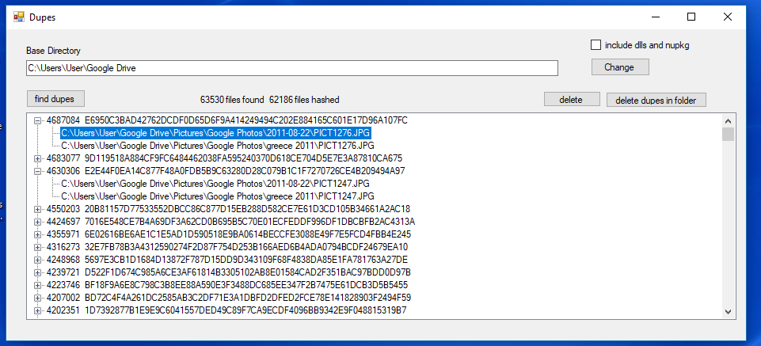

Dupes File Duplicate Detector
I tried some free utilities, and found them to be slow and not great.
So I made my own.
- Select your Base Directory using the “Change” button
- Click “find dupes”.
- The program will count files in the directory, then make a SHA256 signature for each one, allowing duplicates to be identified.
- It takes about 40 minutes on my old Intel Core i5 laptop to hash 40 gig of files.
- Then delete the duplicate(s). Select the file in the tree, and press “delete”.
- A power feature is “delete dupes in folder”. If you realise you have a bunch of files in folder A duplicated in folder B, so you see a lot of unwanted dupes in folder B, then selecting one of them and pressing “delete dupes in folder” will find all dupes in that folder and delete them.
- If a file no longer has any dupes, it’s removed from the list.
- The files are listed in descending size order. So the parent item is like 4687084 E6 etc below means it’s 4 meg in size, and the second long number is the SHA256 signature.

Happy de-duping.
Jeff Davies
hipparchus2000@gmail.com
If you like this product, or find it useful, please paypal me $5 to help me continue to write useful fast non-adware utilities.
Many thanks.